Cows produce 150 billion gallons of methane per day
Each cow uses 2-5 acres of land
A farm with 2,500 dairy cows produces the same amount of waste as a city of 411,000 people
15x more protein on any given area of land with plants, rather than cows
Per KG of Pork
(Litres of water)
Per KG of Soya
(Litres of water)
12.4 kg of CO2 is created per kg of pork consumed.

In North Carolina 1999, a hurricane caused water contamination when a pig farm's waste pods overflowed, a $17 million research project to try and safely get rid of farming waste proved futile.
According to a 2008 GAO estimate, hogs in five eastern North Carolina counties produced 15.5 million tons of manure in one year. To keep the lagoons from overflowing, farmers have been known to spray liquid manure containing bacteria on their fields nearby.
Per KG of Sheep
(Litres of water)
Per KG of Soya
(Litres of water)
New Zealand, the biggest exporter of lambs, can blame half of it's green house gas emissions on Animal Agriculture
5 Sheep take up 4000m² of land which although can't be used for crops, could support a natural ecosystem instead
Because 50% lamb is imported into the US, Lamb that is flown in creates 39.2 kg CO2 per KG of meat in addition to the 20-30 litres of methane a sheep produces per day
Per KG of Sheep
(Litres of water)
Per KG of Soya
(Litres of water)
For every 1kg of chicken consumed, approximately 7kg of CO2e is generated. That's double that of potatoes and 7x that of lentils
British people eat on average 25kg of chicken annually, that's 175kg of CO2e every year. That enough to power a 13-watt CF lightbulb for 561 days, continuously
A typical slaughter plant kills over a quarter of a million chickens and uses 2 million gallons of water per day